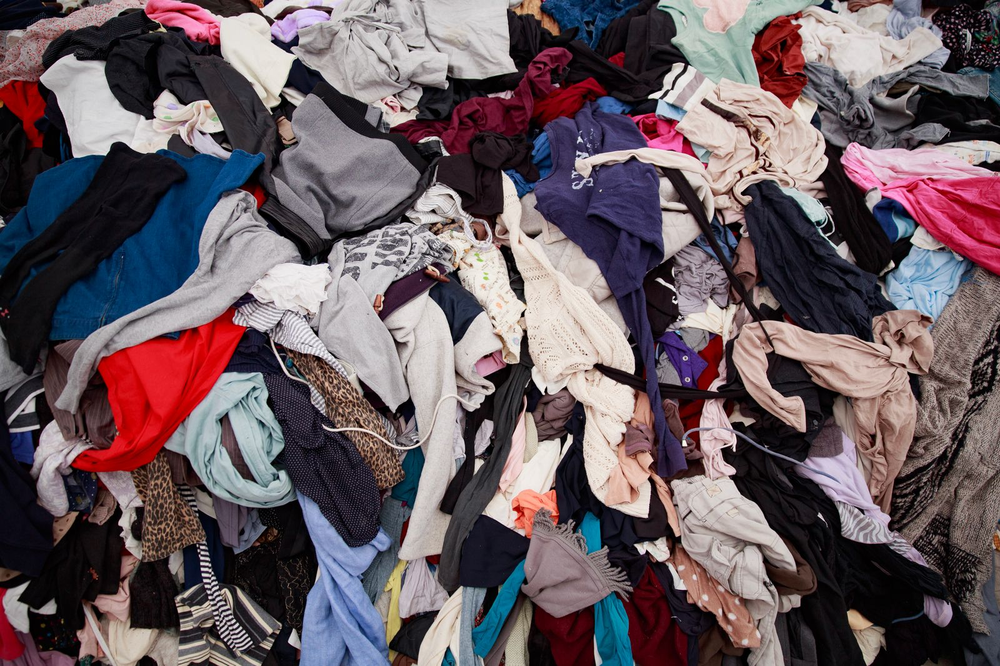

Every item that comes through Msaada does good for the planet, for people and for the young people who repair it.
Reduce waste
Useful things get a second life instead of being thrown away.
Support people
Families and neighbours who need everyday essentials can get them more easily.
Create opportunities
Young people learn repair skills that can lead to work.

Good items, brighter futures.
A circle where nothing useful goes to waste.
Msaada is a circular community support initiative that collects useful items people no longer need, repairs and reuses them, and redistributes or sells them at affordable prices to refugees and host community members.
Along the way, less gets thrown away and young people learn a trade by repairing what comes in.
Msaada · مساعدة means “help” in Swahili and Arabic.